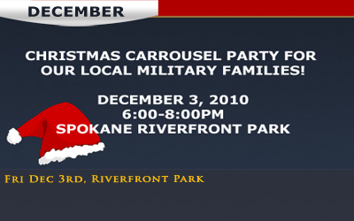
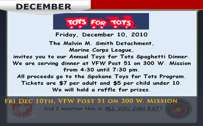
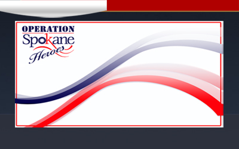

Fri Dec 3, Christmas Carrousel Party
Fri Dec 10, Toys for Tots Dinner
Contact Us To Help

Toys for Tots Dinner
December 10, 2010
4:30 until 7:30 pm, VFW Post 51, on 300 W. Mission
More Information

Check back for January events
